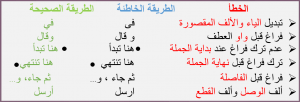

نستخدم في تحرير ويكيبيديا نصًا بسيطًا مميزًا يسمى “نص الويكي”، يساعدنا هذا النص المميز على تنسيق ما نكتبه وصياغته برموز بسيطة دون الحاجة إلى تعلم برمجة صعبة أو التعامل مع أدوات معقدة، كما يوفّر صفحات خفيفة الحجم لتصفح أسرع وتعديل أسهل. ومن بين هذه الرموز البسيطة: الأقواس {([])} والنجمة * والهاشتاغ # وعلامة يساوي = وغيرها وهو ما توضحه الصفحات اللاحقة.
تنقسم مقالة ويكيبيديا عادة إلى أقسام عندما تكون طويلة مما يساعد على ترتيبها وعلى سهولة تحريرها لاحقا. هذا يجعل قراءتها أسهل أولا، ثانيا عندما تريد أن تحرر جملة في مقالة طويلة، لا داع لتقوم بضغط “عدل هذه الصفحة” والانتظار لفتح كامل النص المصدري للصفحة، بل يكفيك أن تضغط عبارة [عدل] الموجودة قرب أقرب عنوان رئيسي أو فرعي لتفتح النص المصدري الخاص بهذه الفقرة فقط. انظر مقطع في مقالة ويكيبيديا .
بشكل عام كل فقرة أو مقطع يجب أن تخصصه بعنوان أما عن طريقة كتابة العنوان فتكون بوضعه بين عدد من إشارات التساوي (=):
تفاصيل وأمثلة على ويكيبيديا العربية .
تختلف طريقة التنسيق في مقالات الويكي عن التنسيق في معالجات النصوص العادية مثل مايكروسوفت وورد أو أوبن أوفيس . لكن طريقة التنسيق هنا ليست صعبة بضع تجارب وستصبح محترفا. هناك فقط بعض الصياغات النصية لتجعل عبارة عنوانا لفقرة، ومؤشرات لجعل الخط غليظا أو مائلا. تعرف هذه الطريقة بـ”نص-الويكي” أو “تأشير-الويكي” وهي مصممة لتكون أسهل من طريقة كتابة النصوص في HTML .
تفاصيل وأمثلة على ويكيبيديا !
تُعد الوصلات الداخلية من أهم مميزات ويكيبيديا، حيث تستخدم للربط بين مقالات الموسوعة وبعضها. وهناك نوعان من الوصلات الداخلية:
نستخدم أيّا من الطريقتين حسب السياق، ونكتب علامتي الأقواس المربعة المزدوجة “[[” أو “]]” بالضغط على زر Shift وحرف “ب” أو “ي” على الترتيب.
وأخيرًا، إذا أردت إضافة وصلة داخلية لمقالة ما لكنّي لم أجدها على ويكيبيديا العربية، فماذا أفعل؟
للمزيد: انقر على الرابط التالي ويكيبيديا العربية !
الوصلة الحمراء هي وصلة داخلية لمقالة غير موجودة، وتتحول تلقائيًا إلى زرقاء بعد إنشاء تلك المقالة، ويكون من المفيد ترك الوصلات الحمراء في المقالات للإشارة إلى أن هناك حاجة إلى تلك المقالات. ووفق دراسة أجريت عام 2008، تساهم الوصلات الحمراء في دفع عجلة تطور ويكيبيديا.
لكن، إذا قمت بإضافة وصلة وظهرت حمراء، فعليك:
مثلًا: إذا أضفنا وصلة [[ابن خلدون أبو زيد]] وظهرت حمراء، نبحث عن “ابن خلدون” فقط، وستظهر المقالة المطلوبة. وعليه نستبدل نص الوصلة بـ[[ابن خلدون]] وستظهر زرقاء. وسيلة أخرى للتحقق من وجود المقالة من عدمه، نبحث المقالة في جوجل فنكتب مثلًا: “ابن خلدون ويكيبيديا”.
للمزيد: انقر على الرابط التالي ويكيبيديا العربية !
يمكنك إثراء ويكيبيديا بالكتابة في أي مجال تفضله، بشرط موثوقية ما تضيفه من معلومات وحياديته. لكن تجنب:
للمزيد: انقر على الرابط التالي ويكيبيديا العربية !
التعديلات المعلقة أو المراجعات المعلمة هو نظام معمول به في ويكيبيديا العربية، ويهدف لزيادة موثوقية المحتوى من خلال تعليق أي تعديل أو إضافة يقوم بها مستخدم حديث أو غير مسجّل حتى يقوم مستخدم آخر قديم وموثوق يسمى” محرر” بمراجعة هذه التعديلات المعلّقة والتأكّد من صحتها ومن ثم يقبلها أو يرفضها.
فإذا كنت مستخدمًا حديثًا وقد قمت بإجراء تعديلات أو أنشأت مقالة فستظل تعديلاتك معلقة حتى يقوم محرر بمراجعتها. لا تقلق، فيمكن للجميع الحصول على صلاحية محرر بعد انقضاء فترة مناسبة على تسجيلهم بشرط أن يكون لهم رصيد مساهمات سليمة موثوقة، فيتقدم من يرغب بطلب للحصول على الصلاحية ليتم الموافقة عليه إذا استوفى الشروط.
للمزيد: انقر على الرابط التالي ويكيبيديا العربية !
ملحق تاريخ الصفحة الخاص بصفحات ويكيبيديا يضم النسخ السابقة لنص الويكي الخاص بها، بالإضافة إلى تاريخ ووقت كل تعديل تم بها واسم المستخدم أو عنوان الآي بي لمن قام بالتعديل، وملخص التعديل الخاص بكل تعديل. ويمكن الوصول لتاريخ الصفحة عن الطريق الضغط على “التاريخ” في أعلى الصفحة.
ويهدف تاريخ الصفحة لتوثيق كافة التغييرات الطارئة عليها. بالإضافة لاسترجاع نسخة قديمة في حالات التعديلات التخريبية وغيرها.
للمزيد: انقر على الرابط التالي ويكيبيديا العربية !
المقالة اليتيمة هي مقالة لا تصل لها أي مقالة أخرى، أي لا توجد وصلة زرقاء لها في أي مقالة أخرى في الموسوعة وبالتالي لا نستطيع أن نصل لها إلا عن طريق شريط البحث. والأفضل أن تكون الموسوعة مترابطة ببعضها البعض، لذا يفضل التغلب على ذلك.
ويمكن حل ذلك عن طريق إضافة فقرة أو جملة عن المقالة اليتيمة (باستخدام وصلة زرقاء) في مقالات أخرى لها علاقة بهذه المقالة. أو تضاف الى قائمة “انظر أيضا” في احدى المقالات المشابهة. فإذا صارت المقالة موصولة من ثلاث مقالات على الأقل، يكون من الممكن إزالة قالب يتيمة “{{يتيمة}}” من أعلى المقالة.
للمزيد: انقر على الرابط التالي ويكيبيديا العربية !
البوت هو مستخدم آلي، تتم برمجته ليقوم بأعمال مملة ثابتة لتوفير الكثير من الوقت على باقي المستخدمين، فمثلًا هناك بوت يقوم بالتصحيحات الإملائية لبعض كلمات مثل “المانيا” ويحولها لـ”ألمانيا”، وآخر يقوم بإزالة المسافات التي لا حاجة لها في المقالات، وآخر يصلح القوالب، وهكذا…
أي أن البوت يقوم بمهام مملة يمكن للمستخدمين القيام بها في وقت طويل، وهو ما يوفر الكثير من الجهد.
للمزيد: انقر على الرابط التالي ويكيبيديا العربية !
ويكيبيديا -الموسوعة الأكبر في تاريخ الإنسانية- هي موسوعةٌ حرّةٌ يتضافر فيها مجهود آلاف المتطوعين، قد تبدأ المقالة بوصلة حمراء أضافها مساهم في مقالة ما، ثم وجدها مساهم آخر وأنشأها كبذرة بما لديه من معلومات، ليضيف إليها مساهمون آخرون كُلّ قدر استطاعته، فمنهم من يجيد الترجمة، وآخر مولع بالتنسيق، وآخر مُلم بالقواعد النحوية فصوب ما وجده خطأً، ثم تبعتهم مجموعة أخرى طوّرتها لتصبح المقالة مختارة. هل انتهى الأمر؟ بالطبع لا. ستظل المقالة قابلة للتطوير والإثراء والتحسن لغويًا وتنسيقيًا، وربما تظهر مصادر جديدة تساهم في توثيقها وتوسعتها، حتى أن كونها مقالة مختارة اليوم لا يعني أنها ستظل كذلك للأبد، فمع تطور الموسوعة وارتقاء المساهمين بمقالاتها سترتفع معايير اختيار المقالات كمختارة، وما نعتبره اليوم مختار، بمجهود الآلاف سيصبح هو الحد الأدنى مستقبلًا.
للمزيد: انقر على الرابط التالي ويكيبيديا العربية !
نقلاً عن موقع ويكيبيديا العربية ترتكز سياسات وإرشادات ويكيبيديا على خمسة أسس وتنطلق منها:
للمزيد: انقر على الرابط التالي ويكيبيديا العربية !
يعتبر أي موضوع يتناوله مقال ما في ويكيبيديا مهمًّا وضروري الوجود إذا كان موضع بحث ونقاش في عدد من مصادر المعلومات المنشورة أو المرئية أو المسموعة. في الكثير من الحالات المختلف عليها يكون المعيار الأساسي هو مدى شهرة الموضوع ومدى تناوله في مصادر المعلومات ووسائل الإعلام، بحيث تكون إضافته لويكيبيديا مبررة وليس مجرد دعاية (ويكيبيديا:ويكيبيديا ليست للدعاية). يجب أن يتوفر عند البحث عن عنوان أي مقالة كمية جيدة من مصادر المعلومات المستقلة عن الشخص، أو الموقع الإلكتروني، أو القناة التلفزيونية، بحيث تزودنا بوجهات النظر المختلفة ونقد هذا الموضوع/الشيء موضع النقاش.
الكثير من الويكيبيديين يؤكدون أن مقالات ويكيبيديا وبالأخص السير الشخصية يجب أن تكون على درجة من الأهمية والفائدة للناس لكي يسمح لها بالبقاء في ويكيبيديا. يندرج في هذا السياق التأكيد على تدقيق أهمية الشخص أو الحدث الذي تتناوله المقالة، وأن تسمح الأحداث التي عايشها ذلك الشخص بكتابة مقالة غنية عنه كما تنص معايير السير الذاتية.
يعتبر موضوع ما مهما وجديرا بالملحوظية (أو البروز) إذا ما كان يحظى باهتمام يتعدى دائرة مجموعة ضيقة من المهتمين أو المعنيين بالموضوع، أو إذا كان ذا أهمية خاصة أو تأثير بحيث يتطلب أن يعرف به الآخرون. ومع أن هذا الموضوع يعتبر امتدادا لموضوع ملحوظية الأعلام، إلا أنه يختلف في كون بعض المواضيع جديرة بالملاحظة مع عدم كونها ذات شهرة أو أهمية، الأمر الذي لا ينطبق على الأعلام.
هنالك عدد من القواعد المجمع عليها في عدد محدود من المواضيع، كفرق الموسيقى والشخصيات الخيالية ومواقع الإنترنت. فإذا لم تحقق مقالة ما هذه المتطلبات المقترحة، ستكون عادة عرضة للنقاش على صفحة مقالات للحذف.
للمزيد: انقر على الرابط التالي ويكيبيديا العربية !
هي خاصية متوفرة في ويكيبيديا وويكاموس وويكي مصدر كطريقة سريعة لاسترجاع التعديلات التي يكون من الواضح أنها غير مفيدة أو مسببة للضرر مثل التخريب أو الكلام بدون معنى؛ هذه الصلاحية متاحة للإداريين والمستخدمين الحاصلين على علم المسترجع بعد الموافقة على الطلب.
للمزيد: انقر على الرابط التالي ويكيبيديا العربية !
من أهم قواعد طباعة اللغة العربية بعلامات الترقيم وضع مسافة واحدة فقط بعد علامة الترقيم وليس قبلها؛ باستثناء الأقواس () وعلامات التنصيص ” ” والشرطتين – -، بحيث تلاصق الكلام بداخلها وتوضع مسافة قبلها وأخرى بعدها.
مثلًا: متبقي على انتهاء مسابقة هذا الشهر (أغسطس 2017) 12 يومًا، اغتنم الفرصة!
ويرجع السبب في هذه القاعدة هو أنه إذا تركت مسافة قبل علامة التنصيص ثم انتهى السطر، ستنقل العلامة إلى بداية السطر الجديد وهو ما يبدوا غريبًا.
مراعاة القواعد اللغوية في المقالات بالإضافة للتنسيق الويكيبيدي تُرشح المقالة لتكون مقالة جيدة أو مقالة مختارة. نذكر عدة نقاط مهمة، ويمكن قراءة المزيد عبر دليل الأسلوب.
عند التأليف باللغة العربية أو الترجمة إليها، يرجى مراعاة عدَّة أمور:
بعض الأمثلة تبين الطريقة الصحيحة والخاطئة:
من أجل أن ترتفع جودة المحتوى العربي على ويكيبيديا كما هو الحال في العديد من الويكيبيديات المتقدمة كالإنجليزية والألمانية، فلا بد من مُراعاة العوامل اللاحقة والمُطبقة عملياً (أغلبها) في القسم التعليمي:
من الضروري أن تكون الترجمة معلوماتية ومُصاغة بطريقة وأسلوب جيدان، ما يسهل فهم المضمون وبذلك يحقق الإفادة. يستخدم العديد من المحرريين الترجمة الإلكترونية وهذا خطأ كبير يعرض المقالة للحذف السريع وربما منع حساب المستخدم إن تكرر ذلك ولم يتجاوب مع التنبيهات. يمكن استخدام القواميس والمعاجم المتعددة لترجمة المصطلحات ولكن ليس لترجمة جمل كاملة، بل لا بد من الصياغة بأسلوب مُفهِم!
تُعد مفهومية المقالة والدقة العلمية أكبر عامل لجودة المقالة ولذلك يحصل على 30% من قيمة النقاط التي تحصل علها المقالة المشاركة في المسابقة الشهرية.
أداة مهمة وفعالة للبحث عن مقالات للترجمة من تصانيف وقوائم مختلفة لإنشائها على ويكيبيديا العربية.
تتيح إيجاد مقالات تنقص على ويكيبيديا العربية ببحث سهل وترتبط مع أداة ترجمة المحتوى